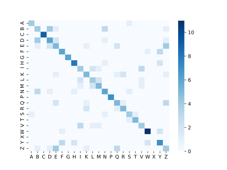

ProSeqViewer provides both single sequence and multiple sequence alignment (MSA) visualization. Check our Getting started guide to get familiar with the library. To test custom values immediately without installing the tool try our jsFiddle
Indexes refer to sequence positions and can be provided by the user or automatically calculated by the library. Indexes are disabled by default, you can activate them and choose indexes location, lateral or on top.
Lateral index
{{latindexoptions | json}}
Top index
{{topindexoptions | json}}
The sequence can be broken into chunks of fixed length to improve readability. Chunk length is controlled by the chunkSize option. By default, the viewer is responsive and blocks are automatically moved to a new line when they exceed the container width. Sometimes, e.g. for long sequences, it is preferable to see the sequence without new line breaks. Sequence wrapping is controlled by wrapLine
Responsive (default)
{{wrapoptionsnr2 | json}}
Non-responsive
{{wrapoptionsnr1 | json}}
Icons can be added on top of the sequence. The library provides some predefined icons: helix, turn, lollipop, strand, arrowLeft, arrowRight, noSecondary. Alternatively custom svg icons can be provided, see Documentation
Secondary structure of the human ASL protein (UniProt P04424, Homo sapiens)
{{icons | json}}
Structurally repeated units (blu, red) of the Tryptophan synthase alpha chain (PDB 6UB9 chain A, Mycobacterium tuberculosis). Insertions are in yellow
{{regions | json}}
Match the sequences against a regular expression to show possible patterns.
{{patterns | json}}
Multiple sequence alignment of the Aspartate ammonia-lyase protein (UniProt P0AC38) with ten homologs. Residue numbering displayed on top of the sequences
{{msa | json}}
Amino acids can be colored based on predefined or custom color schemes. Predefined color sets: clustal, zappo, taylor, hydrophobicity, are defined as in JalView, see here. Check the documentation of the sequenceColor option parameter for custom coloring
Clustal coloring
{{clustaloptions | json}}
Amino acids can be colored based on a comparison with the first sequence (the MSA seed). It is possible to provide a custom matrix representing all possible amino acids combinations and a color. ProSeqViewer provides a predefined BLOSUM62 matrix that includes predefined colors proportional to the corresponding substitution values (colors for negative values are not assigned)
Blosum matrix
{{blosumdefaultoptions | json}}

Predefined colors in the BLOSUM62 matrix, negative values are set to zero (white). The diagonal represent the frequency of that amino acid in representative organisms
Custom matrix
Custom color matrix can be provided with the sequenceColorMatrix field
{{blosumcustomoptions | json}}
ProSeqViewer provides two types of consensus, identity and physical. The consensus is
calculated based on amino acid conservation (identity or physical property) over MSA columns and it is added as a new sequence on top.
The most frequent amino acid (or property) is reported.
When the conservation is below a given threshold (consensusDotThreshold option, default 90%) the consensus displays a dot (.) symbol.
It is possible to set a custom consensus with personalized colors, thresholds and symbols
Identity
Different conservation ranges are colored based on predefined colors
{{consensusidentity | json}}
Physical
The most conserved physico-chemical property is reported and colored according to a predefined scheme. If the conservation is 100% the amino acid is reported
{{consensusphysical | json}}